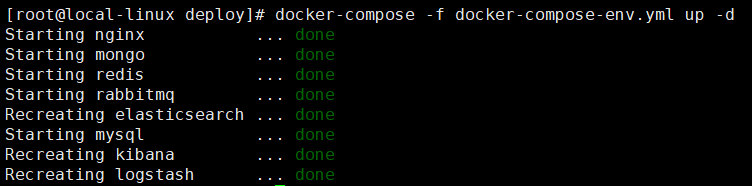
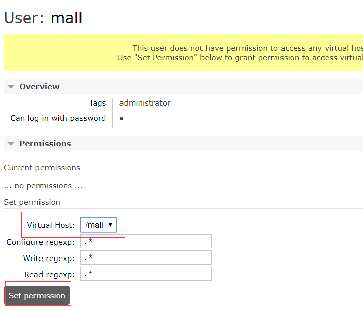
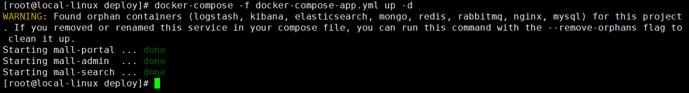
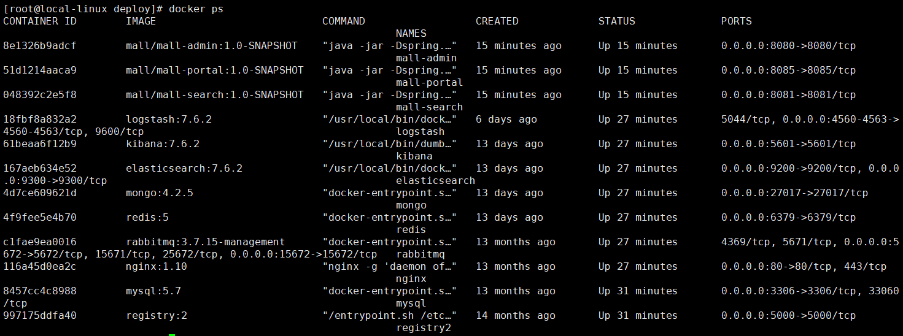
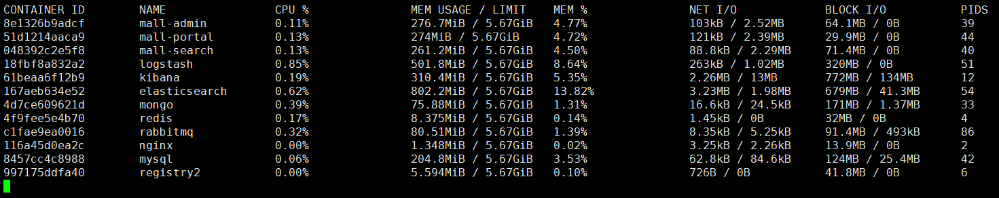

学习不走弯路，关注公众号 回复「学习路线」，获取mall项目专属学习路线！
mall在Linux环境下的部署（基于Docker Compose）
最简单的mall在Linux下部署方式，使用两个Docker Compose脚本即可完成部署。第一个脚本用于部署mall运行所依赖的服务（MySQL、Redis、Nginx、RabbitMQ、MongoDB、Elasticsearch、Logstash、Kibana），第二个脚本用于部署mall中的应用（mall-admin、mall-search、mall-portal）。
docker环境搭建及使用
具体参考：开发者必备Docker命令
docker-compose环境搭建及使用
具体参考：使用Docker Compose部署SpringBoot应用
mall项目的docker-compose部署
运行配置要求
CenterOS7.6版本，推荐4G以上内存。
部署相关文件
- 数据库脚本
mall.sql：https://github.com/macrozheng/mall/blob/master/document/sql/mall.sql - nginx配置文件
nginx.conf：https://github.com/macrozheng/mall/blob/master/document/docker/nginx.conf - Logstash配置文件
logstash.conf：https://github.com/macrozheng/mall/blob/master/document/elk/logstash.conf - 系统服务运行脚本
docker-compose-env.yml：https://github.com/macrozheng/mall/tree/master/document/docker/docker-compose-env.yml - 应用服务运行脚本
docker-compose-app.yml：https://github.com/macrozheng/mall/tree/master/document/docker/docker-compose-app.yml
部署前准备
打包并上传mall应用的镜像
需要打包mall-admin、mall-search、mall-portal的docker镜像，具体参考：使用Maven插件为SpringBoot应用构建Docker镜像
下载所有需要安装的Docker镜像
docker pull mysql:5.7
docker pull redis:5
docker pull nginx:1.10
docker pull rabbitmq:3.7.15-management
docker pull elasticsearch:7.6.2
docker pull kibana:7.6.2
docker pull logstash:7.6.2
docker pull mongo:4.2.5
Elasticsearch
- 需要设置系统内核参数，否则会因为内存不足无法启动；
# 改变设置
sysctl -w vm.max_map_count=262144
# 使之立即生效
sysctl -p
- 需要创建
/mydata/elasticsearch/data目录并设置权限，否则会因为无权限访问而启动失败。
# 创建目录
mkdir /mydata/elasticsearch/data/
# 创建并改变该目录权限
chmod 777 /mydata/elasticsearch/data
Nginx
需要拷贝nginx配置文件，否则挂载时会因为没有配置文件而启动失败。
# 创建目录之后将nginx.conf文件上传到该目录下面
mkdir /mydata/nginx/
Logstash
修改Logstash的配置文件logstash.conf中output节点下的Elasticsearch连接地址为es:9200。
output {
elasticsearch {
hosts => "es:9200"
index => "mall-%{type}-%{+YYYY.MM.dd}"
}
}
创建/mydata/logstash目录，并将Logstash的配置文件logstash.conf拷贝到该目录。
mkdir /mydata/logstash
执行docker-compose-env.yml脚本
将该文件上传的linux服务器上，执行docker-compose up命令即可启动mall所依赖的所有服务。
version: '3'
services:
mysql:
image: mysql:5.7
container_name: mysql
command: mysqld --character-set-server=utf8mb4 --collation-server=utf8mb4_unicode_ci
restart: always
environment:
MYSQL_ROOT_PASSWORD: root #设置root帐号密码
ports:
- 3306:3306
volumes:
- /mydata/mysql/data/db:/var/lib/mysql #数据文件挂载
- /mydata/mysql/data/conf:/etc/mysql/conf.d #配置文件挂载
- /mydata/mysql/log:/var/log/mysql #日志文件挂载
redis:
image: redis:5
container_name: redis
command: redis-server --appendonly yes
volumes:
- /mydata/redis/data:/data #数据文件挂载
ports:
- 6379:6379
nginx:
image: nginx:1.10
container_name: nginx
volumes:
- /mydata/nginx/nginx.conf:/etc/nginx/nginx.conf #配置文件挂载
- /mydata/nginx/html:/usr/share/nginx/html #静态资源根目录挂载
- /mydata/nginx/log:/var/log/nginx #日志文件挂载
ports:
- 80:80
rabbitmq:
image: rabbitmq:3.7.15-management
container_name: rabbitmq
volumes:
- /mydata/rabbitmq/data:/var/lib/rabbitmq #数据文件挂载
- /mydata/rabbitmq/log:/var/log/rabbitmq #日志文件挂载
ports:
- 5672:5672
- 15672:15672
elasticsearch:
image: elasticsearch:7.6.2
container_name: elasticsearch
environment:
- "cluster.name=elasticsearch" #设置集群名称为elasticsearch
- "discovery.type=single-node" #以单一节点模式启动
- "ES_JAVA_OPTS=-Xms512m -Xmx512m" #设置使用jvm内存大小
volumes:
- /mydata/elasticsearch/plugins:/usr/share/elasticsearch/plugins #插件文件挂载
- /mydata/elasticsearch/data:/usr/share/elasticsearch/data #数据文件挂载
ports:
- 9200:9200
- 9300:9300
logstash:
image: logstash:7.6.2
container_name: logstash
environment:
- TZ=Asia/Shanghai
volumes:
- /mydata/logstash/logstash.conf:/usr/share/logstash/pipeline/logstash.conf #挂载logstash的配置文件
depends_on:
- elasticsearch #kibana在elasticsearch启动之后再启动
links:
- elasticsearch:es #可以用es这个域名访问elasticsearch服务
ports:
- 4560:4560
- 4561:4561
- 4562:4562
- 4563:4563
kibana:
image: kibana:7.6.2
container_name: kibana
links:
- elasticsearch:es #可以用es这个域名访问elasticsearch服务
depends_on:
- elasticsearch #kibana在elasticsearch启动之后再启动
environment:
- "elasticsearch.hosts=http://es:9200" #设置访问elasticsearch的地址
ports:
- 5601:5601
mongo:
image: mongo:4.2.5
container_name: mongo
volumes:
- /mydata/mongo/db:/data/db #数据文件挂载
ports:
- 27017:27017
上传完后在当前目录下执行如下命令：
docker-compose -f docker-compose-env.yml up -d

对依赖服务进行以下设置
当所有依赖服务启动完成后，需要对以下服务进行一些设置。
mysql
需要创建mall数据库并创建一个可以远程访问的对象reader。
- 将mall.sql文件拷贝到mysql容器的/目录下：
docker cp /mydata/mall.sql mysql:/
- 进入mysql容器并执行如下操作：
#进入mysql容器
docker exec -it mysql /bin/bash
#连接到mysql服务
mysql -uroot -proot --default-character-set=utf8
#创建远程访问用户
grant all privileges on *.* to 'reader' @'%' identified by '123456';
#创建mall数据库
create database mall character set utf8;
#使用mall数据库
use mall;
#导入mall.sql脚本
source /mall.sql;
elasticsearch
需要安装中文分词器IKAnalyzer，并重新启动。
docker exec -it elasticsearch /bin/bash
#此命令需要在容器中运行
elasticsearch-plugin install https://github.com/medcl/elasticsearch-analysis-ik/releases/download/v7.6.2/elasticsearch-analysis-ik-7.6.2.zip
docker restart elasticsearch
logstash
需要安装
json_lines插件，并重新启动。
docker exec -it logstash /bin/bash
logstash-plugin install logstash-codec-json_lines
docker restart logstash
rabbitmq
需要创建一个mall用户并设置虚拟host为/mall。
- 访问管理页面地址：http://192.168.3.101:15672

输入账号密码并登录：guest guest
创建帐号并设置其角色为管理员：mall mall

- 创建一个新的虚拟host为：/mall

- 点击mall用户进入用户配置页面

- 给mall用户配置该虚拟host的权限

执行docker-compose-app.yml脚本
将该文件上传的linux服务器上，执行docker-compose up命令即可启动mall所有的应用。
version: '3'
services:
mall-admin:
image: mall/mall-admin:1.0-SNAPSHOT
container_name: mall-admin
ports:
- 8080:8080
volumes:
- /mydata/app/mall-admin/logs:/var/logs
- /etc/localtime:/etc/localtime
environment:
- 'TZ="Asia/Shanghai"'
external_links:
- mysql:db #可以用db这个域名访问mysql服务
mall-search:
image: mall/mall-search:1.0-SNAPSHOT
container_name: mall-search
ports:
- 8081:8081
volumes:
- /mydata/app/mall-search/logs:/var/logs
- /etc/localtime:/etc/localtime
environment:
- 'TZ="Asia/Shanghai"'
external_links:
- elasticsearch:es #可以用es这个域名访问elasticsearch服务
- mysql:db #可以用db这个域名访问mysql服务
mall-portal:
image: mall/mall-portal:1.0-SNAPSHOT
container_name: mall-portal
ports:
- 8085:8085
volumes:
- /mydata/app/mall-portal/logs:/var/logs
- /etc/localtime:/etc/localtime
environment:
- 'TZ="Asia/Shanghai"'
external_links:
- redis:redis #可以用redis这个域名访问redis服务
- mongo:mongo #可以用mongo这个域名访问mongo服务
- mysql:db #可以用db这个域名访问mysql服务
- rabbitmq:rabbit #可以用rabbit这个域名访问rabbitmq服务
上传完后在当前目录下执行如下命令：
docker-compose -f docker-compose-app.yml up -d

开启防火墙即可在其他主机上访问所有服务
systemctl stop firewalld
至此所有服务已经正常启动


公众号